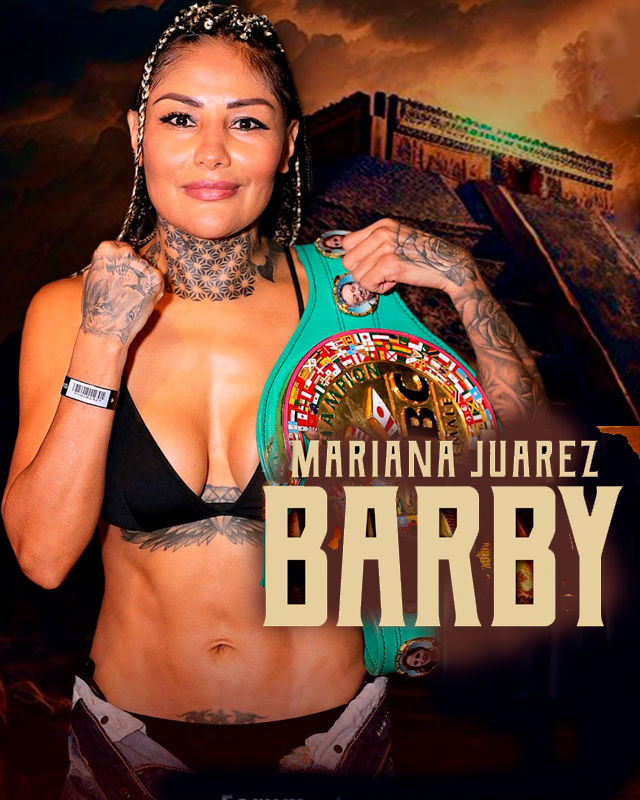

← Nuestros peleadores
Mariana Juárez · La Barby

Coyoacán, CDMX · 58-13-4, 20 KO’s
Mariana Juárez, fue pionera del boxeo femenil en el mundo, protagonizando el primer duelo reglamentado en México; realizando una exitosa carrera en el extranjero conquistando Japón, Corea del Sur y Estados Unidos para volver como campeona del mundo a México y consolidarse ante su público primero como campeona Nacional, después Internacional, mundial interina y mundial absoluta de peso mosca, ya convertida en una estrella reconocida por los fanáticos; con más de 35 combates frente a campeonas mundiales y más de 50 combates de título mundial, conquistó ante 50,000 fanáticos el título mundial absoluto de peso gallo en el Zócalo de la Ciudad de México; convirtiéndose en un referente para las nuevas generaciones además de incursionar en diferentes facetas como el modelaje, la conducción, la narración, y otros relacionados con el boxeo y la filantropía. Actualmente es la campeona Silver WBC de peso supergallo.